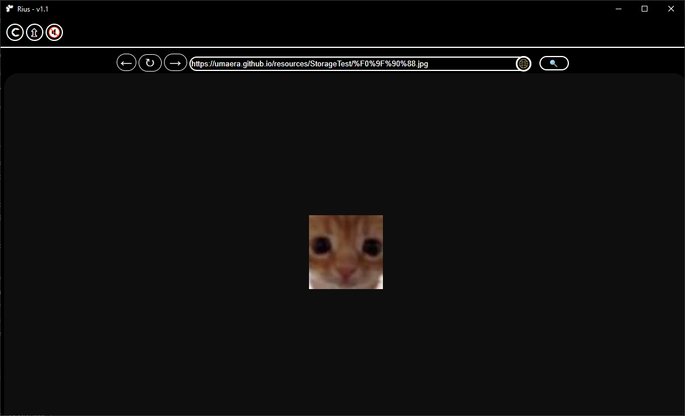

About RiusBrowser
An experimental browser project created by UmaEra, after the 5th month of development of the SimplyPrivate Browser. She wanted something that can save the website state (images/structure/scripts) whenever the user wants. To revisit the website.
The project was put to side, but not officially abandoned.
Funfact: This browser received "plugins" and "webpacks" first than SimplyPrivate.
Created in: march 2024
